Dejá de comprar ropa por la edad.
Comprá por altura. Te mostramos cómo, de recién nacido a 8 años.
Deslizá →
Comprá por altura. Te mostramos cómo, de recién nacido a 8 años.
Dos nenes de la misma edad pueden llevarse 10 cm. Por eso la etiqueta de "4 años" a veces no le entra.
| RN | hasta 50 cm |
| 0–3 | 50 a 62 cm |
| 3–6 | 62 a 68 cm |
| 6–12 | 68 a 80 cm |
| 12–24 | 80 a 92 cm |
| 2 | 86 a 92 cm |
| 4 | 98 a 104 cm |
| 6 | 110 a 116 cm |
| 8 | 122 a 128 cm |
Cada marca talla distinto: mirá siempre la tabla de la etiqueta.
Elegí el más grande.
Le dura una temporada más. Y si igual no le queda, en Brote lo cambiás hasta 90 días.
Guardalo y escribinos TALLE por WhatsApp.

Ahora te acompañamos
de recién nacido
a los 8 años.
Abrimos Brote y lo festejamos
con 4 marcas de Córdoba.
Deslizá para participar →
Seguí a las 5 cuentas
@brote.bebe · [@marca2] · [@marca3] · [@marca4] · [@marca5]
Etiquetá a 2 amigas
Cada comentario con 2 amigas es una chance más.
Compartilo en tus historias
Suma una chance extra. Etiquetanos para verlo.
Una caja Brote
+ 4 regalos de Córdoba
Participá hasta el 30/11
Ropa para chicos de 0 a 8 años.
Suave, bien hecha
y pensada para usar de verdad.
Hola, somos Brote 🌱 · Córdoba
Deslizá →

Un brote es lo primero que asoma cuando algo empieza a crecer.
Así son los chicos: todo el tiempo están empezando algo nuevo. Y la ropa les queda chica antes de que te des cuenta.
Y las primeras en enterarse tienen 15% off por 48 horas.